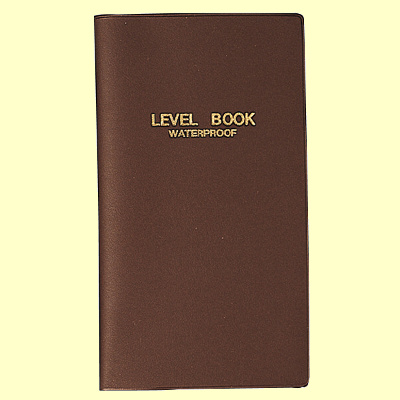

ティップス
便利な小道具 防水タイプ フィールドノート
水温、ハッチしていた虫のスケッチ、当たりフライなど、釣り場でのメモのために、ベストに一冊メモ帳を入れておくと重宝します。
ところが、普通のメモ帳では、川の中で転んだり、大雨に遭ったりして濡れると紙がボロボロになってしまいます。
そこで、現在私は、コクヨ製のレベルブック（品番：セ－Y11）という測量用の野帳を釣り用のフィールドノートとして持ち歩いています。防水加工された紙に手頃な罫が引いてあるので、いろいろなメモをきちんと書き込むことができます。ボールペンの乗りも上々です。2018年3月現在、アマゾンでは、1冊320円ほどで売っています。10冊セットもありますね。寸法はタテ166×ヨコ96×厚み3ミリとなっていて、フィッシングベストのポケットに楽に入ります。

画像はコクヨのオンラインショップより引用
また、装丁も丈夫にできていますので、ハードな使い方でも安心です。少し気になる点としては、色が茶色で地味なので、落としたときに見つけにくいかと思います。赤・青・黄色のブライトカラーのバージョンもあるのですが、少々値段が高くなります。（泣）黄色なんかはいいですね。
アマゾンの紹介ページには、「昭和24年に測量法が制定されたのをきっかけに、ニーズが増大した測量業務の現場の声を反映し、開発されたのが測量野帳です。この測量野帳は、発売からすでに50年以上が経過しましたが、品質改善のための仕様変更があった以外、ほとんどデザインが変わらない珍しい商品です。」とあります。
みなさんのフィールドノートが、大漁の記録で埋められますことを祈りつつ...
（追記）この防水ノートを、研究や調査で野外活動の多いニュージーランドのワイカト大学のヒックス教授とNIWAという研究機関のジャックさんに贈ったところ、「これはいい！」と絶賛されました。
ティップス 目次へ
サイトマップ
ホームへ
お問い合わせ